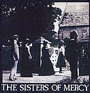
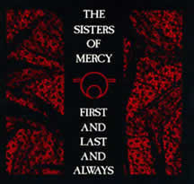
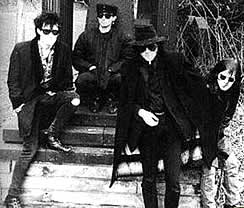

A biografia da banda The Sisters of Mercy tem
início em 1980 com Andrew Eldritch. O jovem era estudante
de Letras (francês, alemão, italiano, galês,
latim, russo e chinês) além de literatura francesa
e alemã em Oxford. Andrew mudou-se para Leeds com o objetivo
de estudar Chinês e Ciência Política. Foi morar
num apartamento que ficava sobre uma farmácia da cidade.
Certa vez, casualmente, encontrou uma bateria abandonada no porão
da farmácia e decidiu estudar o instrumento por conta própria.
Pouco tempo depois Andrew conheceu Gary Marx e descobriram que,
além de morarem próximos um do outro, cultivavam
as mesmas tendências musicais. Decidiram formar uma banda.
O nome The Sisters of Mercy foi escolhido
a partir de uma música de Leonard Cohen, Sisters of
Mercy. A música de Cohen fazia referência a
um grupo de freiras católicas. Porém, esta letra
é interpretativa e pode também fazer alusão
às prostitutas. Ao escolherem este nome, Andrew e Gary
interpretaram a segunda opção. Segundo Andrew, o
comportamento das bandas de rock daquela época poderia
ser associado à atividade das prostitutas. O nome The
Sisters of Mercy seria uma ótima metáfora para
a situação.
Inicialmente,
a banda era formada apenas pela dupla Andrew e Gary. Com esta
formação, de modo precário e com poucos recursos
financeiros, a dupla gravou o primeiro trabalho. O single Damage
Done foi lançado pelo próprio selo do grupo,
Merciful Release. Não havia interesse das gravadoras
e o recurso de criar um selo era mais viável. Este single
trazia apenas três faixas, The Damage Done, Watch
e Home of the Hitmen, foram prensadas 1000 cópias.
Apesar de soar cru, Damage Done já
trazia as características que consagrariam a banda no futuro:
bateria seca, baixo hipnótico, atmosfera opressiva, guitarras
distorcidas e voz cavernosa. O single teve uma venda ínfima.
Mas a dupla não desistiu.
No início de 1981, Andrew assume o vocal
da banda e coloca uma bateria eletrônica, o famoso Doktor
Avalanche. Além disso, Craig Adams (baixo) é
convidado para integrar a banda e iniciar as apresentações
ao vivo. A primeira apresentação ocorreu em fevereiro
deste mesmo ano. Apesar do desentrosamento musical e das péssimas
condições de som, o The Sisters of Mercy foi aplaudido.
No final do ano, Benn Gun é recrutado como segundo guitarrista.
Os covers dessa época já denunciavam as influências
da banda: The Stooges, Velvet Underground, Rolling Stones e o
próprio Leonard Cohen.
Com a formação mantida, a banda
grava o segundo single, Body Electric, no qual está
a clássica Adrenochrome. Este trabalho foi criticado
pela imprensa local que o classificou como "voodoo-rock",
mas foi bem aceito pelo público que começava a tomar
conhecimento do The Sisters of Mercy. No decorrer do ano, a banda
faz apresentações ao lado de Psychedelic Furs e
é convidada a tocar na emissora BBC. Em novembro, dá
início as gravações do terceiro single, Alice,
com as faixas Alice e Floorshow.
Em 1983, o The Sisters of Mercy dá continuidade
à turnê e em março lança o single Anaconda.
Segue-se o lançamento do EP The Reptile House.
A popularidade cresce e inicia-se uma turnê européia.
Até que surge o primeiro show nos Estados Unidos e a oportunidade
de gravar num estúdio sofisticado. Assim nasce o aclamado
EP Temple of Love.
No
ano seguinte, Benn Gun deixa a formação e é
substituído por Wayne Hussey, ex-músico do Dead
or Alive. Nesta mesma época, a banda assina contrato com
a gravadora Elektra, um dos "tentáculos" da poderosa
Warner. As apresentações seguem-se em diversos pontos
da Europa e América. Outros singles são lançados
e contribuem muito para a popularidade que crescia constantemente.
Neste momento, os jovens ingleses dão início à
preparação do primeiro álbum.
O primeiro álbum oficial foi lançado
em 1985. First and Last and Always é para muitos
fãs, o melhor trabalho do The Sisters of Mercy, incluindo
a melhor formação que a banda já teve em
sua história. Neste trabalho, Wayne destacou-se como principal
compositor. Mas Andrew ainda era o mentor.
A partir deste momento, a banda entra numa fase
muito atribulada. Na turnê de divulgação do
disco, Gary e Andrew desentendem-se e Gary abandona a formação.
Ainda, Wayne e Andrew, passam a disputar espaço. As composições
de Wayne não agradam Andrew e as divergências pessoais
e musicais intensificam-se e tornam-se insuportáveis. Dessa
forma, na última data da turnê, no show do Royal
Albert Hall, em Londres, Andrew despede-se do público
e tudo indica que, naquele momento, terminava a trajetória
do The Sisters of Mercy.
Sobre as divergências, Andrew chegou a declarar
para imprensa: "Eles me perguntaram: O que vamos fazer
pelas novas canções? Eu disse: Que tal isto, isto
e isto? Mas, infelizmente, o primeiro ‘isto’ que eu
citei tinha muitos acordes por minuto e Craig não quis
tocá-lo". Hussey também disse: "A
maioria das canções que estamos tocando no The Mission
são canções rejeitadas por Eldritch para
o segundo álbum dos Sisters. Isso é irônico,
porque atualmente ele vê nossos shows e me diz o quão
boas elas são".
Após este fato, transcorreram-se cinco
anos de rivalidade e disputas jurídicas. Em princípio
ambas as partes concordaram que não usariam o nome The
Sisters Of Mercy. Porém, Hussey e o baixista Graig Adams
deram continuidade na carreira e gravaram algumas demos que não
obtiveram sucesso entre as gravadoras. Assim, a dupla decide usar
um nome que, de certa forma, os associassem ao The Sisters of
Mercy.
O nome escolhido era The Sisterhood e
a dupla chegou, algumas vezes, a se apresentar ao vivo. Por outro
lado, Andrew Eldritch sentiu-se lesado ao ver que o antigo companheiro
havia "quebrado o acordo de cavalheiros". Além
disso, Sisterhood também era o nome do fã
clube do The Sisters of Mercy. Assim, Andrew rapidamente registrou
o nome e em seguida lançou um single, Givin Ground,
e um álbum, Gift (Veneno, em alemão),
no qual se encarregou apenas da programação eletrônica.
Este trabalho contou com alguns convidados como Patrícia
Morrison (que chegou a compor uma formação do The
Sisters), Alan Veja, Lucas Fox e James Ray. A disputa pelo nome
terminou nos tribunais e a dupla Hussey e Graig teve de batizar
sua nova banda como The Mission.
A
banda The Sisters of Mercy com sua nova formação,
com Andrew, a baixista Patricia Morrison e Doktor Avalnche, voltou
à ativa em 1987, com o álbum Floodland.
Com um estilo diferenciado dos anteriores, este disco emplacou
clássicos como Dominion, Mother Rússia
e This Corrosion, que chegaram a ocupar as primeiras
posições na parada de sucessos norte-americana.
Ainda foram incluídas como bônus, Torch
e Colours, originalmente lançadas em Gift.
Mas a faixa de maior destaque foi 1959 (ano de nascimento
de Andrew Eldritch). Esta música foi uma sugestão
de uma fã a Andrew, de compor uma balada de voz e piano.
Em 1988, são lançados dois singles:
Dominion e Lucretia My Reflection. O álbum
Floodland vende mais de 200 mil cópias na América.
No ano de 1990 ocorreu o lançamento de Vision Thing.
Este disco é definido como o encontro do Gothic Rock com
o Hard Rock. Um dos destaques deste trabalho é a penúltima
faixa, More. Nesta época, a formação
era, além de Andrew e Doktor Avalanche, Tim Bricheno (guitarra),
Andréas Bruhn (guitarra) e Tony James (baixo). Foi com
esta formação neste mesmo ano que a banda apresentou-se
no Brasil, passando por Porto Alegre, Rio de Janeiro, Brasília
e São Paulo.
Logo após o lançamento do álbum
e a turnê, o The Sisters of Mercy entra em conflito com
a gravadora. Nos anos seguintes foram lançadas apenas duas
coletâneas: Some Girls Wander By Mistake e A
Slight Case of Overbombing, esta no estilo "Grandes
Sucessos", que também incluía a inédita
Under The Gun, faixa que originalmente faria parte da
trilha sonora do filme O Corvo. A banda segue em turnê
e alguns integrantes criam projetos paralelos.
Nesta época, Andrew declarou que um novo
trabalho seria feito apenas quando o embate com a gravadora estivesse
concluído. Mas o contrato exigia que mais um disco fosse
lançado. Após cinco anos de disputa encontrou-se
um acordo e foi lançado em 1997 o Screw Shareholder
Value: Go Figure (SSV). Andrew definiu o estilo como "música
eletrônica sem bateria". Este disco foi propositalmente
mal feito com a intenção de cumprir e encerrar o
contrato com a gravadora.
Nas
excursões mais recentes, surgiram novas músicas
como Romeo Down, Summer, Will I
Dream, (We are the same) e Suzanne, que
podem compor um novo lançamento. Mas, por enquanto, são
apenas rumores. Atualmente, a formação é
Andrew Eldritch (vocais), Adam Pearson (guitarra e backing vocals),
Chris Sheehan (guitarra e backing vocals) e o inabalável
Doktor Avalanche (bateria).
Em 25 anos de carreira, a banda atravessou diversas
fases distintas com formações variadas. Por isso,
torna-se difícil incluir o The Sisters of Mercy dentro
de um rótulo musical ou enquadrá-los e associá-los
à uma determinada época. Mas,
devido ao som atmosférico, das referências sombrias
aos rituais e símbolos esotéricos, alguns consideram
o TSoM como uma típica banda gótica dos anos 80.
No mais, cabe aos fãs e leigos cultuarem uma das mais prósperas
bandas que surgiu nas últimas décadas.
Por
Spectrum
Downloads
Disponíveis: